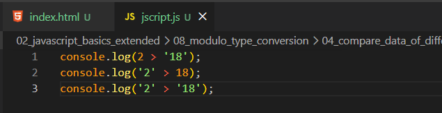
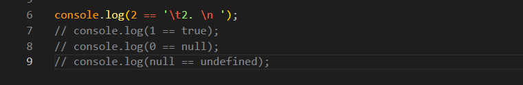

Compare Data Of Different Types
Intro
Aqui iremos ter os seguinte codigo de exemplo:

Aqui iremos ter os seguinte codigo de exemplo:

Aqui iremos fazer algumas comparacoes com tipos de dados, como podemos observar em nosso codigo acima. Estamos comparando incialemnte um valor numerico com uma string numerica, depois uma string numerica com valor numerico, e por ultimo temos ambos valores string com numeros.
Em nossas comparacoes, o JS converte o numero string para numero, com isso temos false para ambos os primeros resultados pois 2 nao e maior que 18.
Porem em nosso ultimo caso '2' > '18' temos resultado como true,quando o JS tem um numero e compara com uma string ele tenta fazer uma conversao para numero e avaliar o resultado.
Porem quando temos duas strings, ele faz um pouco diferente, ele pega caractere por caractere de cada uma das strings, e compara cada um de seus valores. No caso ele pegao o primeiro valor sendo 2 e depois pega o primeiro valor de 18, sendo 1
Agora teremos o seguinte codigo de exemplo:

Em nossa primeira exempressao temos como resultado, true. No caso dessa comparacao ampla (==), o JS ira basicamente ignorar o \t (tab) e o \n, fazendo a comparacao levando em conta apenas o 2.
console.log(1 == true); aqui tambem temos como resultado true. Nesse caso o JS tambem faz a conversao, convertendo o valor do boolean (true) em um numero, e com isso temos true.
console.log(0 == null); Aqui temos como resultado false. Na documentacao do JS, diz que o null e apenas igual a ele mesmo ou ao undefined.
console.log(null == undefined); Aqui temos como resultado true. Como mencionado o null e apenas igual a ele mesmo ou undefined.
Por isso e sempre importante o uso de igualdade estrita, para que evitemos resultado indesejados.